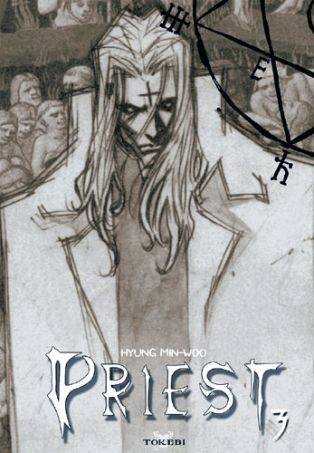
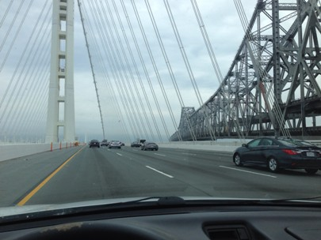

When the people came out of the cave and finally saw the light, they were blinded by it. Knowledge has always seemed like the answer to most things, but it doesnt help all too much with matters of the heart.
Mood Image
I decided to upload one image that reflects an internal feeling of mine. This is a character who represents an inner struggle I've suffered through. (Yes I have a soft spot in my heart for anime/manga)
San Fransisco: Acta Sanctorum
This is a shot I took looking out over SF.
Most of my photos are created while driving. I like driving.
Background
I'm pretty multicultural. My father is Palestinian, and my mother is half white half Mexican. Over the years I've been immersed in several different cultures. As someone who has moved time and time again, I have an almost natural ability to adapt to the culture of my surroundings. Ive learned that even driving a few hours in any direction creates the possibility of finding a completely new sub-culture. These experiences have generated a mixture of emotions and lessons, but one thing I am sure of is that I have become a more understanding and empathetic human being as a result of these experiences. I dont know that this is directly important to my career as a programmer, but I have a feeling I will find a connection in the near future.
Lets Code
Contact me through the e-mail provided below
Email me at: mr.ziad.abdo@gmail.com
I am an up and coming web designer and ruby coder. Keep an eye out for me on my website!

© Most of these images, and all of the work provided, has my name on it. Dont steal my SHtuff.